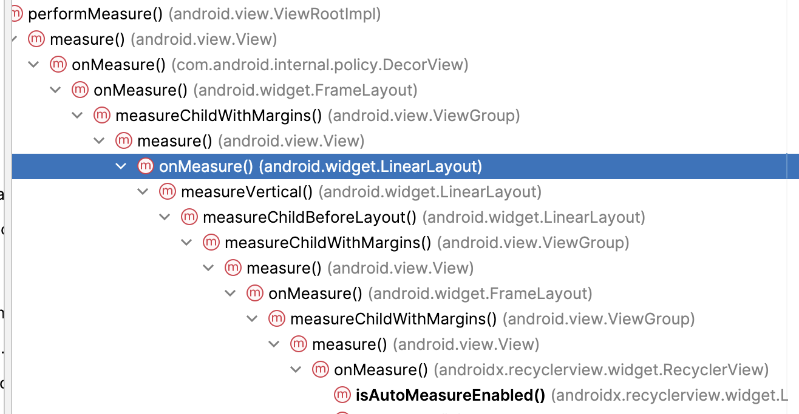
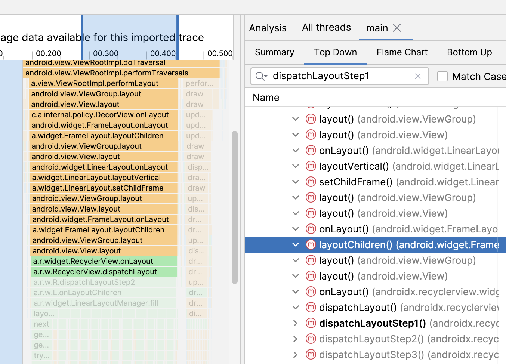
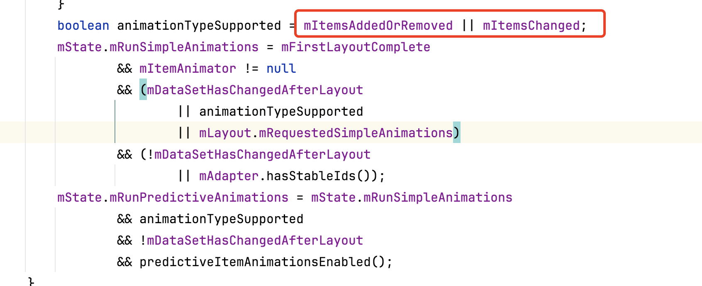

初始化过程
当我们app收到choregrapher的vsync信号的时候，会给主线程发送一条消息， 告诉app需要绘制了，而此时发送是通过给主线程的message设置一个callback（runnable），所以会触发handler的dispatchmessage->handleCallback，接着就是触发FrameDisplayEventReceiver的doframe方法，该方法会计算丢帧数，以及执行callbackqueue数组中的callbackqueue，也就执行到了我们的performTraversal方法，该方法里面会执行到measure，最后执行到recyclerview的onMeause，recyclerview的onMeasure中会判断自己的测量模式，如果是精确的模式，则不测量子item。
trace图如下： 
接着走到recyclerview的onlayout，在onlayout里面触发dispatchlayout，该方法里面会判断state的step，默认是STEP_START，因此会触发dispatchLayoutStep1和dispatchLayoutStep2，在dispatchLayoutStep1中如果有动画要处理，则会触发layoutManager的onlayoutChildren
有动画的条件是：

有表项新增或移除、有更改的时候。默认是没有动画要处理，紧接着来到了dispatchLayout2，该方法主要是触发了layoutManager.onLayoutChildren。
 调用链如下：
linearlayoutmanager.fill->layoutmanager.layoutChunk->layoutstate.next->recycler.getviewforposition->recycler.tryGeyViewHolderForPostionByDeadline->adapter.createViewHolder->adapter.bindViewHolder到这里一个holder的创建于bind过程就结束了，紧接着在layoutchunk中触发layoutmanager.addView和layoutmanager.measureChildWithMargin，到这里表项才会被加入到recyclerview中，但是此时不会刷新recyclerview。
调用链如下：
linearlayoutmanager.fill->layoutmanager.layoutChunk->layoutstate.next->recycler.getviewforposition->recycler.tryGeyViewHolderForPostionByDeadline->adapter.createViewHolder->adapter.bindViewHolder到这里一个holder的创建于bind过程就结束了，紧接着在layoutchunk中触发layoutmanager.addView和layoutmanager.measureChildWithMargin，到这里表项才会被加入到recyclerview中，但是此时不会刷新recyclerview。
 上面说到的layoutchunk会在一个while循环中多次执行，直到recyclerview的空间没有了才不会执行，而layoutchunk又会走recycler.next去从缓存中拿viewholder，而此时缓存中没有viewholder，因此会走createviewholder和bindviewholder，所以一开始create和bind次数是一屏能展示多少个表项的次数。
上面说到的layoutchunk会在一个while循环中多次执行，直到recyclerview的空间没有了才不会执行，而layoutchunk又会走recycler.next去从缓存中拿viewholder，而此时缓存中没有viewholder，因此会走createviewholder和bindviewholder，所以一开始create和bind次数是一屏能展示多少个表项的次数。
接着在dispatchlayout中会调用dispatchlayoutstep3，该方法里面主要是执行scrap缓存的释放，以及动画的执行
 到这里，测量和layout已经梳理完了，最后就剩draw了：
到这里，测量和layout已经梳理完了，最后就剩draw了：
 draw里面基本没干什么，还是沿用了viewgroup的drawchild方法，绿色表示非系统方法，因此可以看出来recyclerview是重写了该方法：
draw里面基本没干什么，还是沿用了viewgroup的drawchild方法，绿色表示非系统方法，因此可以看出来recyclerview是重写了该方法：

总结： 初始化分为onmeasure阶段：如果recyclerview设置了固定宽高，则直接跳过测量，调用到mLayout中，如果不是固定宽高，则会走dispatchLayoutStep1，dispatchLayoutStep2。其中dispatchLayoutStep1是预布局处理，如果有动画要处理才会在该阶段调用到layout的onLayoutChildren。在dispatchLayoutStep2中处理表项的测量。 在onlayout阶段：会判断step还是不是start状态，如果是的话，则再次执行dispatchLayoutStep1和dispatchLayoutStep2。最后调用dispatchLayoutStep3用来做动画执行并释放相关资源。 在draw阶段基本什么都没做，dispatchDraw本身会调用到drawChild，recyclerview只是重写了该方法。
滑动过程
滑动过程中会调用到scrollByInternal->layoutmanager.scrollBy->fill->layoutchunck
layoutchunck里面会从缓存中取数据，如果有则命中，没有则走create和bind，接着划出屏幕的表项会先加入到cache缓存中，如果cache缓存满了，则重置该表项，加入到recyclerpool中，下次所以取的时候从recyclerpool根据viewtype取需要重新bind，不需要create，所以在滑动过程中create的次数是cache的大小次数，等到recyclerpool中有缓存的时候就不需要create了。
在fill过程中，会找到划出屏幕的表项，然后先调用recycleByLayoutState，接着调用到了Linearlayoutmanager.recycleChildren，接着会触发recyclerview.removeAndRecycleViewAt方法，接着就触发了adapter.onViewDetachedFromWindow(viewHolder)，接着就把viewholder缓存到cache和recyclerpool中，对应的方法是recycler.recycleView->recycleViewHolderInternal,其中cache缓存中默认是2个，如果大于2的话，会把最前面的那个给放到recyclerpool中，接着再把新的viewholder放进来。
在fiil过程中，会通过LayoutState.next从缓存中获取viewholder，获取的时候会先判断是不是preLayout状态，如果是则从changeScrap缓存中获取，从changeScrap中获取缓存先通过position获取，如果用position获取不到，则再用id去获取（必须adapter设置setHasStableIds为true，并且adapter重写了getItemId）。如果没获取到则从attacheScrap和cache中获取，如果从attach和cache中找不到，则继续通过id从attachScrap中获取，如果还没获取到则从viewcacheExtension中去获取，如果还获取不到则再从recyclerpool中去获取，如果还获取不到则通过create来创建viewholder，接着走bind逻辑。
所以整个缓存获取顺序： changeScrap(preLayout状态，先通过position获取，没获取到再通过id获取)->attacheScrap->cache->attachScrap(id方式获取)->viewcacheExtension->recyclerpool->createholder->bindholder
这就是layoutstate.next获取viewholder整个逻辑，上面哪些会触发createholder和bindholder
如果从几个缓存中都拿不到viewholder，则会走createholder的逻辑。
什么情况下会调用onBindViewHolder？

-
不是bound状态 bound标志位：是在bindViewHolder的时候设置的，因此不是bound表示没有bind过。没有bind过有：1，createholder；2，从recyclerpool取的viewholder。

-
needsUpdate：该状态表示什么？什么时候才会是needUpdate()呢？
-

-

在viewRangeUpdate设置的。猜测是在viewholder发生变化的时候设置的，验证猜想：
 recyclerview.processAdapterUpdatesAndSetAnimationFlags->AdapterHelper.preProcess->applyUpdate->postponeAndUpdateViewHolders
->markViewHoldersUpdated->viewRangeUpdate，所以在dispatchLayout1过程中给flag设置了update状态
recyclerview.processAdapterUpdatesAndSetAnimationFlags->AdapterHelper.preProcess->applyUpdate->postponeAndUpdateViewHolders
->markViewHoldersUpdated->viewRangeUpdate，所以在dispatchLayout1过程中给flag设置了update状态
- isInvalid：表示什么状态？什么时候赋值的？

 从缓存（attachScrap、cacheview）中获取viewholder的时候，如果发现type和holder的type不一致，则会校验不通过。或者设置了stableids为true的时候，如果adapter中的id和holder的id一致，则也通过。
所以结论就是，需要bound的条件：没有bound过（createholder的holder还没有bound过）；needupdate的，holder发生更新了。invalid，从attachscrap、cache获取后， 如果type不一致也需要重新bound。
从缓存（attachScrap、cacheview）中获取viewholder的时候，如果发现type和holder的type不一致，则会校验不通过。或者设置了stableids为true的时候，如果adapter中的id和holder的id一致，则也通过。
所以结论就是，需要bound的条件：没有bound过（createholder的holder还没有bound过）；needupdate的，holder发生更新了。invalid，从attachscrap、cache获取后， 如果type不一致也需要重新bound。
更新表项
notifyItemChange(0)：更新表项第0的位置
 首先是进入页面创建了10个表项，然后更新后日志如下：
首先是进入页面创建了10个表项，然后更新后日志如下：
 首先给我创建了索引为10的表项，也就是屏幕上不可见的，接着又创建了表项0，通过traceview分析：
首先给我创建了索引为10的表项，也就是屏幕上不可见的，接着又创建了表项0，通过traceview分析：
 整体看经历了rv的layout过程，分别对应了dispatchLayoutStep1、dispatchLayoutStep2、dispatchLayoutStep3。
整体看经历了rv的layout过程，分别对应了dispatchLayoutStep1、dispatchLayoutStep2、dispatchLayoutStep3。
dispatchLayoutStep1
- detachAndScrapAttachedViews
 共经历了10次scrapOrRecycleView：
共经历了10次scrapOrRecycleView：
 它是反向遍历页面上的view，然后添加到srap缓存中：
它是反向遍历页面上的view，然后添加到srap缓存中：

 从scrapOrRecycleView的调用栈来看，是走了else部分，也就是往scrap缓存中加入viewholder。由于viewHolder的isInvalid为false，所以会走else。
从scrapOrRecycleView的调用栈来看，是走了else部分，也就是往scrap缓存中加入viewholder。由于viewHolder的isInvalid为false，所以会走else。
 scrap缓存分两种，attachScrap和changeScrap。不是update的会放到attachScrap中，所以我们更新第0个的时候会放到changeScrap中，在detach的时候由于是反向加入到scrap缓存中的，因此我们看第10个的trace调用：
scrap缓存分两种，attachScrap和changeScrap。不是update的会放到attachScrap中，所以我们更新第0个的时候会放到changeScrap中，在detach的时候由于是反向加入到scrap缓存中的，因此我们看第10个的trace调用：
 从这里看第0个表项在detach的时候会加入到changeScrap中。
从这里看第0个表项在detach的时候会加入到changeScrap中。
结论：在dispatchLayout1中，先将页面上可见的viewholder从页面上分离，然后将update的viewholder放入到changeScrap中，把非update的viewholder放入到attachScrap中。
- fill
 fill阶段发生了layoutChunk11次，而我们刚开始列表是初始化了10个表项，那么说明dispatchLayout1阶段添加了一个新的viewholder，关于这块我们可以给出结论，如果viewhodler被设置了remove或者update标记的时候，则会给列表添加一个新的viewholder。关于这块可以看：https://juejin.cn/post/6890288761783975950
fill阶段发生了layoutChunk11次，而我们刚开始列表是初始化了10个表项，那么说明dispatchLayout1阶段添加了一个新的viewholder，关于这块我们可以给出结论，如果viewhodler被设置了remove或者update标记的时候，则会给列表添加一个新的viewholder。关于这块可以看：https://juejin.cn/post/6890288761783975950
 在fill的while循环中会判断remainingSpace时候大于0，而每次layoutChunk过程中会将remainingSpace减小，而layoutChunkResult.mIgnoreConsumed就是判断是否要减小，意思是如果不忽略才会减小，那什么时候会忽略呢？
在fill的while循环中会判断remainingSpace时候大于0，而每次layoutChunk过程中会将remainingSpace减小，而layoutChunkResult.mIgnoreConsumed就是判断是否要减小，意思是如果不忽略才会减小，那什么时候会忽略呢？
 layoutChunk中判断viewholder如果是remove或者是change时候，才会忽略减小。所以我们会有11次的layoutChunk，而最后一次的layoutChunk会走createViewHolder，也就对应了上面的日志先添加了position=10的viewholder。从trace上看下：
layoutChunk中判断viewholder如果是remove或者是change时候，才会忽略减小。所以我们会有11次的layoutChunk，而最后一次的layoutChunk会走createViewHolder，也就对应了上面的日志先添加了position=10的viewholder。从trace上看下：

结论： dispatchLayout1过程中，将第0个放入到changeScrap中，1-9放入到了attacheScrap中，并且创建了索引为10的viewhodler。
注意：
在dispatchLayout1过程中，如果viewholder经过了addView之后，则会把它从changescrap或者是attachscrap缓存中移除，所以在dispatchlayout2过程中change和attach的缓存为空的。
 其实在dispatchLayout2过程中添加viewholder的view时候也是要从scrap缓存中移除。
其实在dispatchLayout2过程中添加viewholder的view时候也是要从scrap缓存中移除。
dispatchLayoutStep2
-
detachAndScrapAttachedViews
 由于在dispatchLayout1过程中创建了position=10的viewholder，因此会有11次，这11个里面第0个还是添加到了changeScrap中，1-10是添加到attachScrap中。
由于在dispatchLayout1过程中创建了position=10的viewholder，因此会有11次，这11个里面第0个还是添加到了changeScrap中，1-10是添加到attachScrap中。 -
fill
 为什么此过程只有10次layoutChunck呢？这块其实还是回到remainingSpace的计算说起：
为什么此过程只有10次layoutChunck呢？这块其实还是回到remainingSpace的计算说起：
 所以在dispatchLayout2过程中当添加到索引等于9的时候remainingSpace就为0了，所以索引等于10的时候添加不上，因此只会有10次layoutChunck。
所以在dispatchLayout2过程中当添加到索引等于9的时候remainingSpace就为0了，所以索引等于10的时候添加不上，因此只会有10次layoutChunck。 -
layoutChunck 我们可以看到第0个走了createViewholder和bindViewholder：
 是由于第0个viewholder被添加到了changeScrap缓存中，而1-9的viewholder添加到了attachScrap中，而changeScrap只会在pre-layout过程中才会生效：
是由于第0个viewholder被添加到了changeScrap缓存中，而1-9的viewholder添加到了attachScrap中，而changeScrap只会在pre-layout过程中才会生效：
 所以可以看到上面日志中会走了position=0的createViewHolder和bindViewHolder。
所以可以看到上面日志中会走了position=0的createViewHolder和bindViewHolder。
总结: 更新表项的时候，会经历dispatchLayout1，dispatchLayout2，其中在dispatchLayout1（pre-layout阶段）会先把可见的表项给回收到scrap缓存中，回收后，会把可见的表项从recyclerview中分离，其中需要变化的表项会加入到 changeScrap中（第1个表项），不变化的加入到attachScrap中（第2个到第10个表项）。接着在fill阶段会从scrap缓存中取表项，由于有表项更新，所以此时会去创建不可见的表项（第11个表项），最后会添加到recyclerview上。 在dispatchLayout2（post-layout阶段）同样会把dispatchLayout1添加进来的表项给添加到changeScrap（第1个表项）和attachScrap（第2个到第11个表项）缓存中，注意此时的表项会是11个表项。在fill阶段会去创建表项0， 因为post-layout阶段不会去取changeScrap中的viewholder，所以表项0会经历创建。